Overview
Ford’s UX research team synthesized large amounts of video and quantitative data from vehicle test clinics by hand. Our team was asked to bring generative AI into that process while keeping the researcher’s judgment in it.
InsightCuts was one of three directions explored during a Q1 2026 innovation sprint, and the one the team took furthest, with a working prototype, a video simulating the tool’s output, and a feasibility analysis.
The work ran through BVCC Studios, a program connecting students at Historically Black Colleges and Universities with industry mentors and client work, for Ford’s Digital Product Design, Insights & Analytics group.
My Role
I was Presentation Manager on a four-person team, responsible for narrative structure, slide hierarchy, and translating technical research for an executive audience. I also originated the concept with the team, built the coded prototype, and produced the video.
Kelly was Research Manager and designed the final UI and user journey. Sean was Project Manager, and Munashe provided cross-functional support and built the final prototype used at the gate review. A Product Designer and Interaction Designer from Microsoft AI served as our mentor. We split the screens and the presenting across the team.
The Problem
Ford’s Insights & Analytics group runs physical test clinics with roughly two dozen participants an hour through vehicle rigs. Each clinic produces task success rates, error counts, Likert data, verbatim quotes, and video of every session, all synthesized manually. Researchers spent weeks building charts in Excel, and pulling a quote or clip for an executive presentation meant scrubbing through video and cutting it in VLC.
The team set two targets: a lightweight report within 48 hours of a clinic, and a full report within two weeks. AI also had to be introduced without hallucinating findings or treating one participant’s feedback as a systemic pattern.
What researchers told us
The direction came from interviews with Ford’s research team. One researcher described how they mark the moments they need in participant videos:
I literally have a piece of paper here with three numbers on it from the last study… And I hold up a piece of paper in front of the camera… so that I can fast-forward the video to that white thing and then go back three minutes or whatever and then, like, clip it. Like, that’s how tedious this process [is].
A lead UX researcher said video creation, pulling data out of footage and transcripts, and transcribing by hand were very time consuming and not what her job was supposed to be about. The director for the function wanted something short enough for leadership to skim, while still letting engineers see the raw detail.
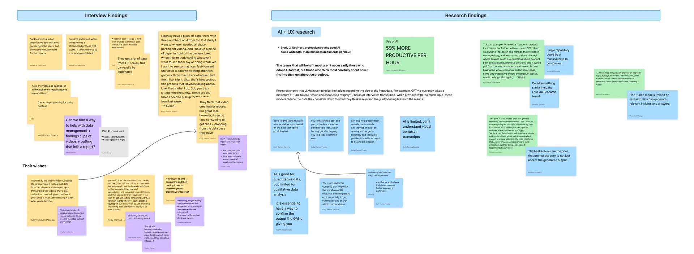
InsightCuts was built to address the gap between what leadership needed and what engineers needed, and the manual work in between.
The Solution
Three directions
The team explored three concepts. RPM turned long text and spreadsheet reports into podcast-style audio overviews. TraceStories presented AI-extracted insights as swipeable cards, each able to flip and show the quote, chart, or video frame behind it. InsightCuts let a researcher flag a moment in raw footage and have the tool assemble a short, captioned highlight clip, replacing manual clipping in VLC.
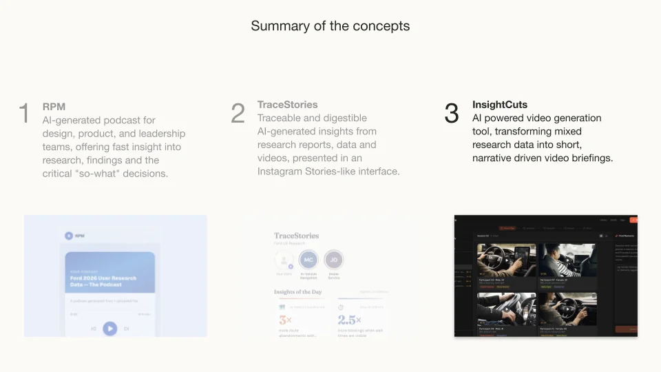
Building the prototype
I built a coded version of InsightCuts in v0, an AI-assisted app builder, so the team and our mentor could click through it before visual design. I kept the team’s Figma files open as reference so the coded interface stayed consistent with the existing designs.
The prototype is a UX research media library. A researcher moves through five steps across the top of the screen: select clips, annotate, assemble, preview, and share. Sessions are organized by project and sprint, and every clip carries a thumbnail, its length, basic participant info, and semantic tags like “safety signal” or “glance duration,” so a researcher isn’t scrubbing through raw footage blind.
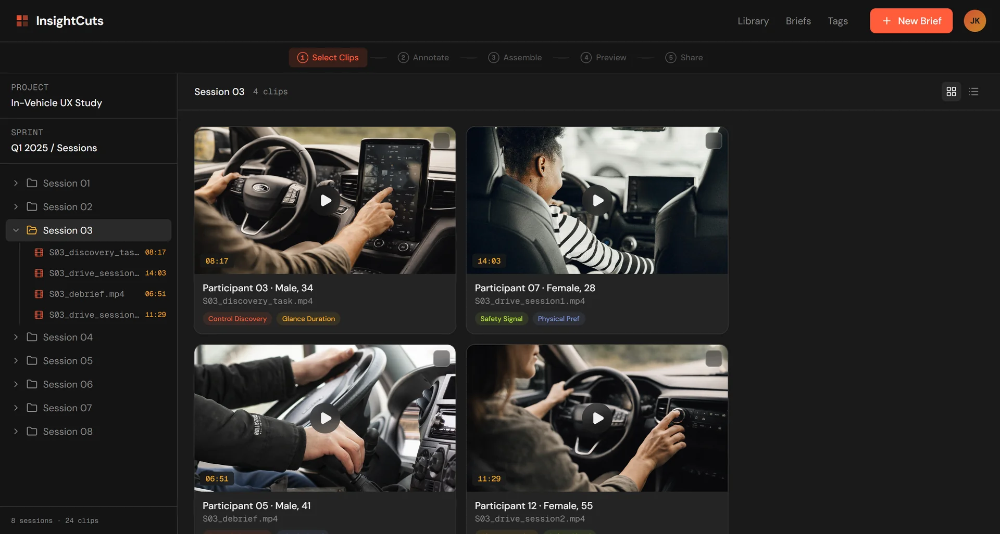
The team and our mentor responded well to the coded prototype and the video, and both kept coming up in the team’s Slack channel afterward. Kelly designed the final UI and user journey from there.
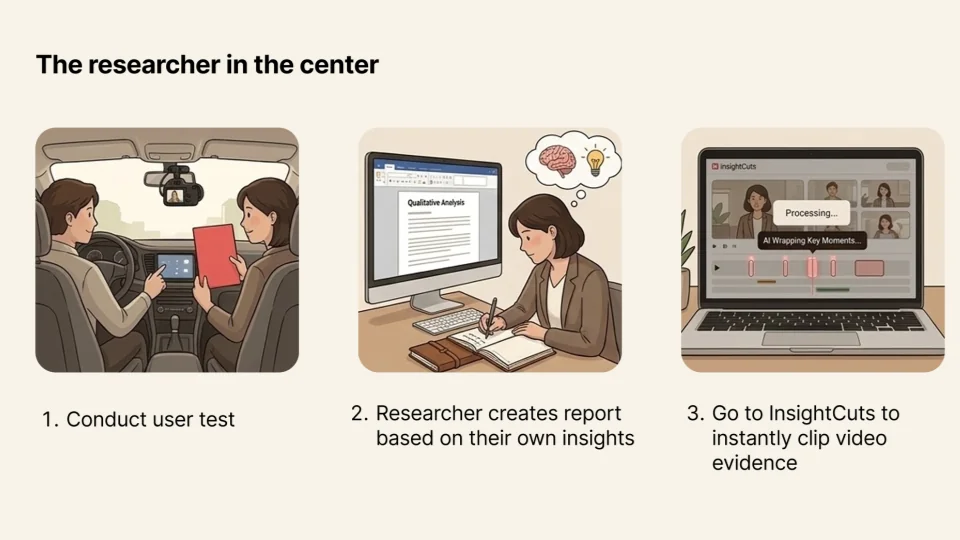
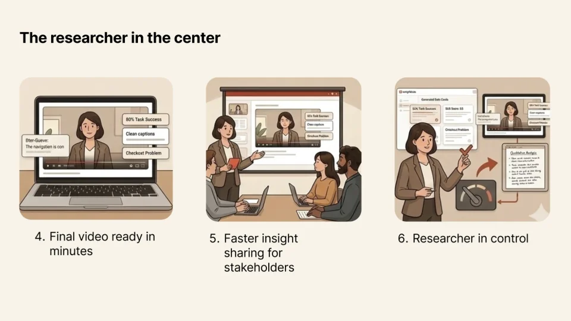
The final flow
A researcher uploads session videos, and CueDetector analyzes them for common patterns, such as a red paper appearing on camera or moments with extended glance duration. This covers the paper-in-front-of-the-camera method from the interview. A researcher can also describe what to look for, such as a gesture or a reaction, and CueDetector finds it across the clips.
Wrap Up turns the selected moments into scene cuts. In the AI Editor, the researcher reviews the result and can flag inaccuracies, ask for more detail, or have a scene analyzed again.
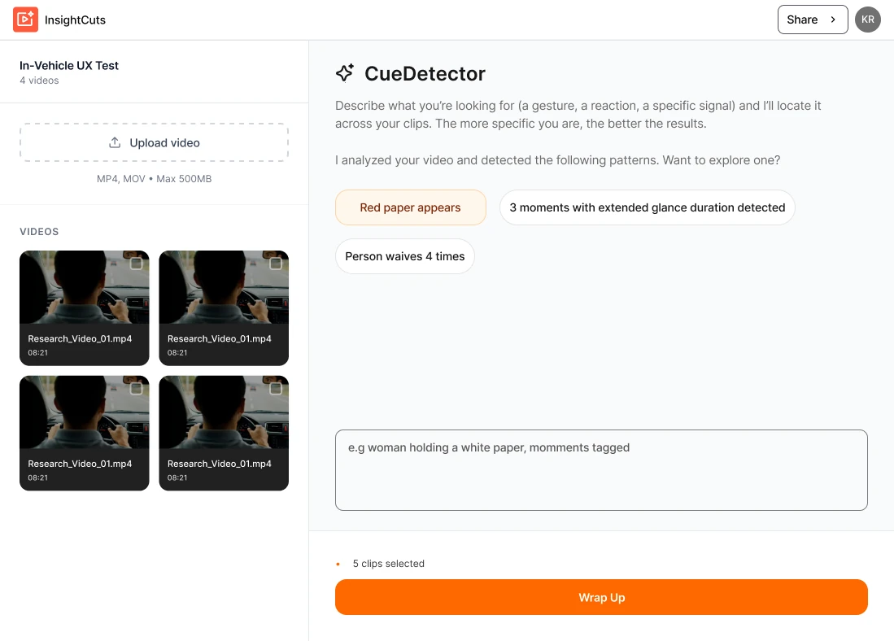
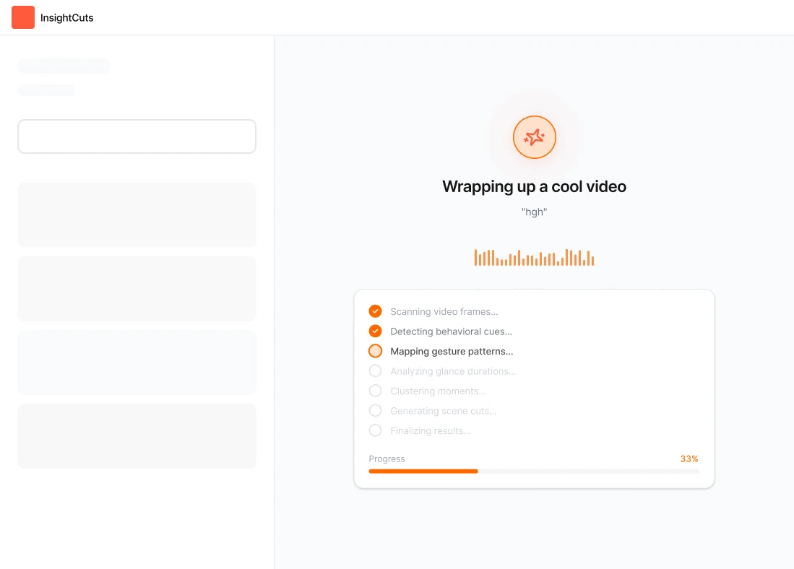
The video
Before the interface existed, I made the team’s first exploratory video, “Searching for Control: Ford EV UX Research,” in Google Vids. Once the concept settled on InsightCuts, the team produced two final videos for the pitch, one by me and one by a teammate. Mine simulated a video InsightCuts would produce from a clinic. Its graphics were inspired by Spotify Wrapped, with bold type, halftone patterns, and one large number per frame, to make the findings youthful and engaging.
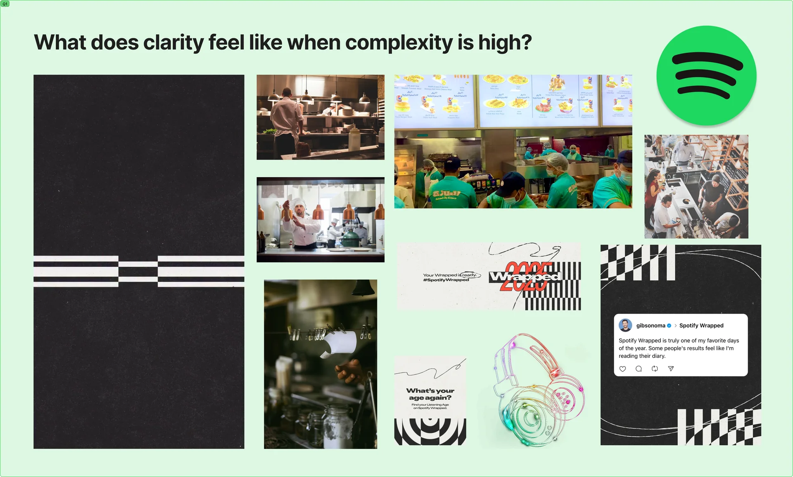
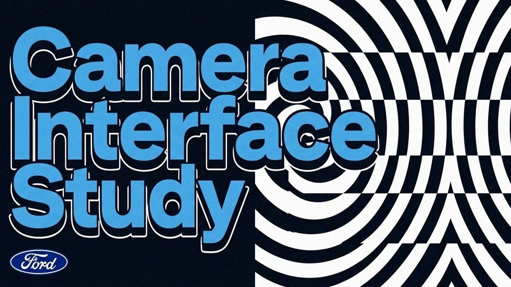
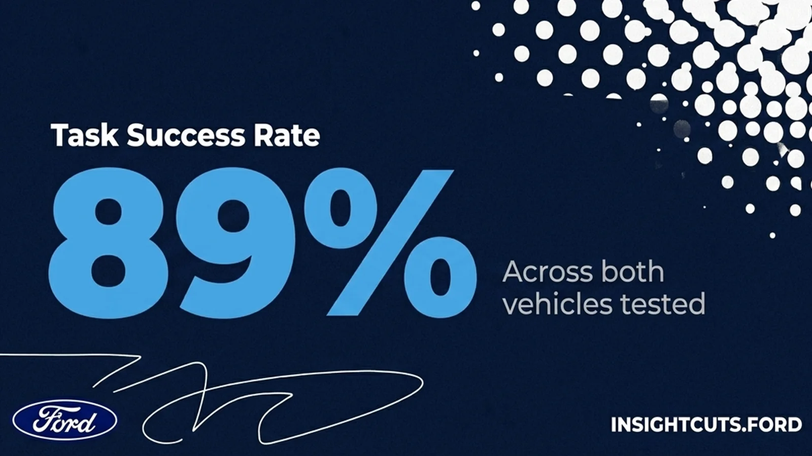
Frames from my final video.
Key Decisions
Quantitative backing
Concept validation with one of Ford’s lead researchers raised a weakness early: engineers won’t trust a highlighted clip without a number behind it, such as how many people failed the step and whether it was one outlier or a pattern. Quantitative backing became a requirement of the tool. Ford’s leadership had also banned the word “intuitive” internally, since it describes a feeling without saying what to fix.
In the final UI, the Insights panel extracts findings and their numbers from uploaded research files, such as PDFs and spreadsheets. A researcher can add a finding to a scene, where it appears as a caption over the footage.
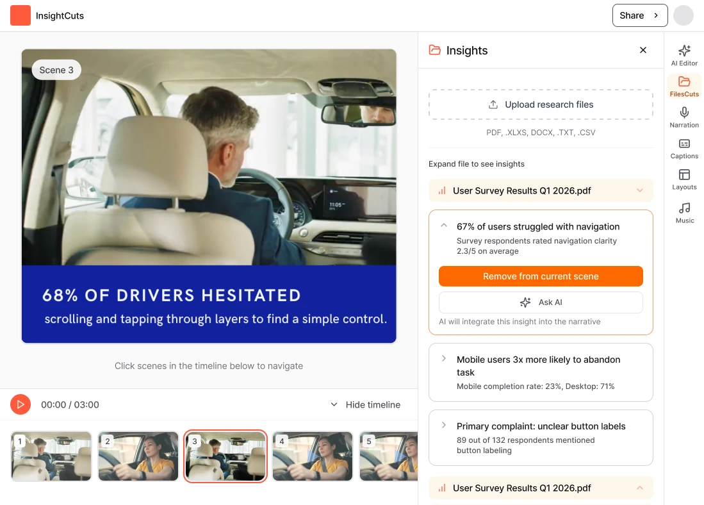
Trace route to source footage
A Ford functional lead said trust in an AI-generated output depends on being able to see where it came from, so every clip and tag InsightCuts surfaces needed to link back to its source footage.
Licensing the video pipeline
Full in-house video processing and storage carries cost and data-privacy risk. The feasibility section recommended licensing or partnering for the video infrastructure, and keeping in-house engineering for the parts of the concept without that risk.
Outcome
We presented InsightCuts at the program’s final gate review on March 6, 2026, to a Ford director and a panel of gate jurors, including a feasibility section.
| Category | Assessment |
|---|---|
| Technical complexity | High |
| MVP timeline | 3 to 4 months |
| Existing tools | NotebookLM, Grain, Dovetail |
| Recommendation | License or partner |
| Data privacy risk | High (video) |
| Relative cost in-house | Significantly higher than licensing |
The v0 prototype is still live.
What I Learned
This project meant pitching directly to a Ford director and a panel of gate jurors, and it depended on getting something functional in front of the team fast enough to test. Building the coded version in v0 gave the team something concrete to react to and refine.
I learned how to translate an existing Figma design system into a coded, AI-assisted build, and got comfortable pitching a functional prototype directly to enterprise stakeholders.